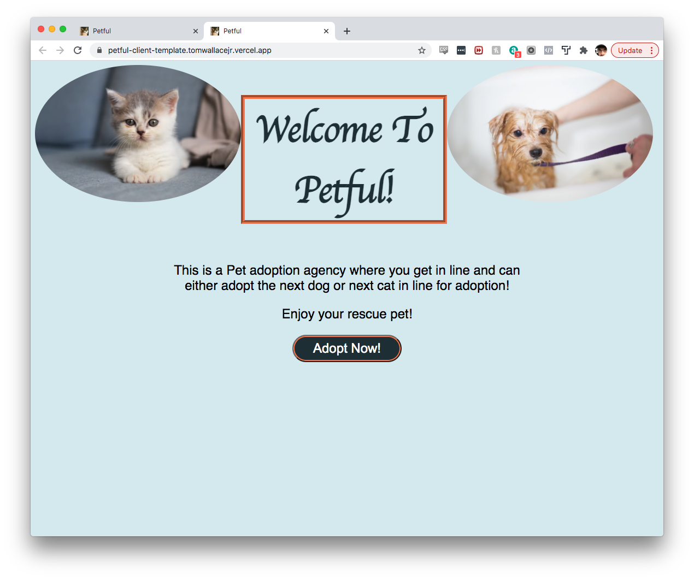
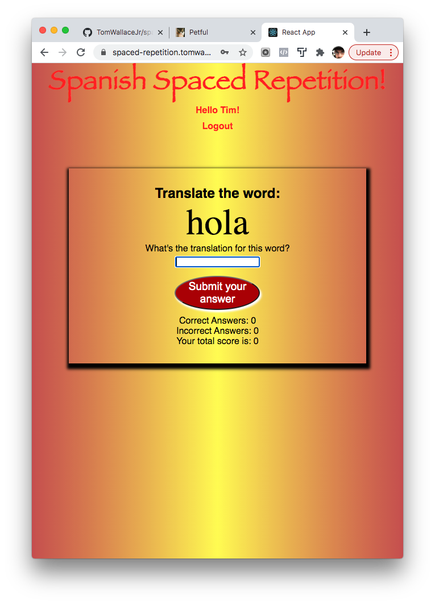
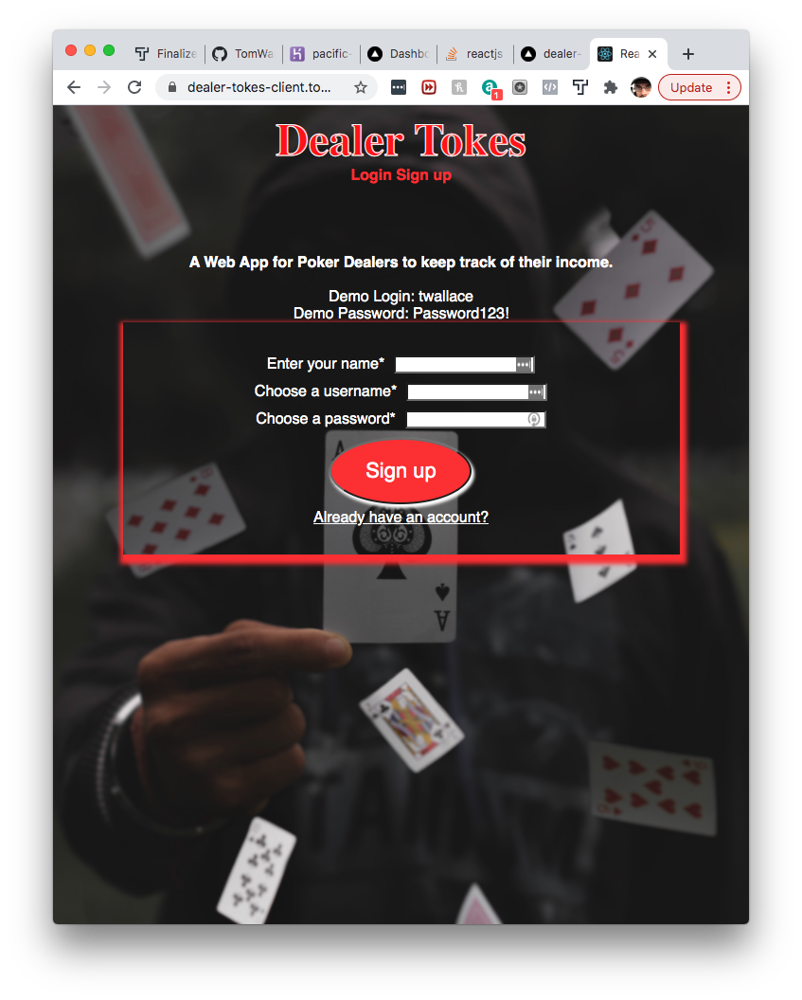

About Me
I am a Full-Stack Web Developer living in Wilkes-barre/Scranton PA, home of The Office and Old Forge Pizza!!
I recently obtained my Certificate of Completion from Thinkful's Remote Engineering Immersion Program and am
excited
to kick start my new career!
When I'm not at the computer, some of my interests include:
- Poker - I have a special place in my heart for the game and I've spent a lot of
time over the past
decade playing in poker rooms up and down the east
coast.
- Football - Avid Philadelphia Eagles fan for life.
- Traveling and the Outdoors - Anywhere and Everywhere!!
- Reading - Mostly non-fiction investing, finance, and technology books
- Bitcoin & Blockchain Technology - I strongly believe this cutting edge technology
is changing the
world for the better!
Career
In 2010, I recieved my A.S in Computer Information Systems from
Luzerne County Community College. Upon graduating, I took a job at
Mohegan Sun Pocono as a table games dealer. There, I learned how to professionally deal
almost any game a casino has to offer.
I moved to Boston MA in early 2019 for a full-time poker dealer
position at Encore Boston Harbor where I learned exceptional
customer service and communication skills. However, city life proved
to be too stressful (and costly) for myself and my family so we moved
back home in early 2020
When COVID struck and I got furloughed, I decided to take the opportunity to get back into the tech industry
so I enrolled at Thinkful. I spent the next 6 months committing 60+ hours a week to learning and honing my new
skills.
I hope to obatain a remote Web Developer position so I can spend more time with my family.
Current Skills
- HTML5
- CSS3
- Javascript ES6
- jQuery
- C#
- JAVA
- Version Control - Git/GitHub
- ExpressJs
- NodeJs
- ReactJs
- SQL
- PostgreSQL
- RESTful APIs
- Hosting Platforms - Heroku, Vercel, AWS
Petful

This application was a project assigned to me during Thinkful's curriculum. It is a fictional adoption
agency for
cats and dogs.
Users enter their name which puts them at the end of a Queue datastructure on the back end. A timer is then
set and every five seconds the user at top of
queue is removed and the top cat or dog (in their own seperate queues) is adopted and removed. When the user
is next in line they will be given teh next dog and next cat available for adoption where they choose.
Built using vanilla CSS, Javascript, ReactJs, NodeJs, ExpressJs, and also implements and manipulates a
Queue data structure on server side.
Spanish Spaced-Rep

This application was my second capstone at Thinkful. It is a Spanish language learning application that
uses the
spaced-repetition learning technique. After registering for a new account, the user is directed to their
dashboard which displays their current progress.
In the Learning Route, one by one, Spanish words render to the screen and the user is prompted to enter the
English translation
of said word. It is built for anybody who would like to learn entry level Spanish.
Developed using vanilla CSS, Javascript, ReactJs, NodeJs, ExpressJs, Knex and is connected to a PostgreSQL
database deployed on Heroku.
Dealer Tokes

Final Capstone Project at Thinkful. This Web Application is designed specifically for Poker Dealers. Dealer
Tokes allows
Poker Dealers to keep track of their total/daily income and keeps track of how much they are making per hour
as well as per down over
time. Upon registering, the user is directed to a Dashboard Route where an interactive calendar is rendered
to the screen.
By clicking a day on the calendar, a component renders below it and prompts the user for their results from
said workday. The Statements
route, displays how much the user has made to date, their hourly toke rate, and their toke rate per down. I
am in the process of including
monthly statements as well as a graphical representation of the users statistics over time.
This application is my baby and I plan to expand and add numerous features to it overtime but it is LIVE
now.
I built the front end using vanilla CSS, Javascript, ReactJs, and is deployed on Vercel. The back end was
built using NodeJs, ExpressJs,
Knex and connects to a PSQL database deployed on Heroku.